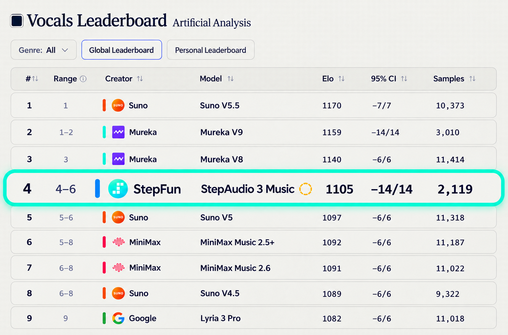
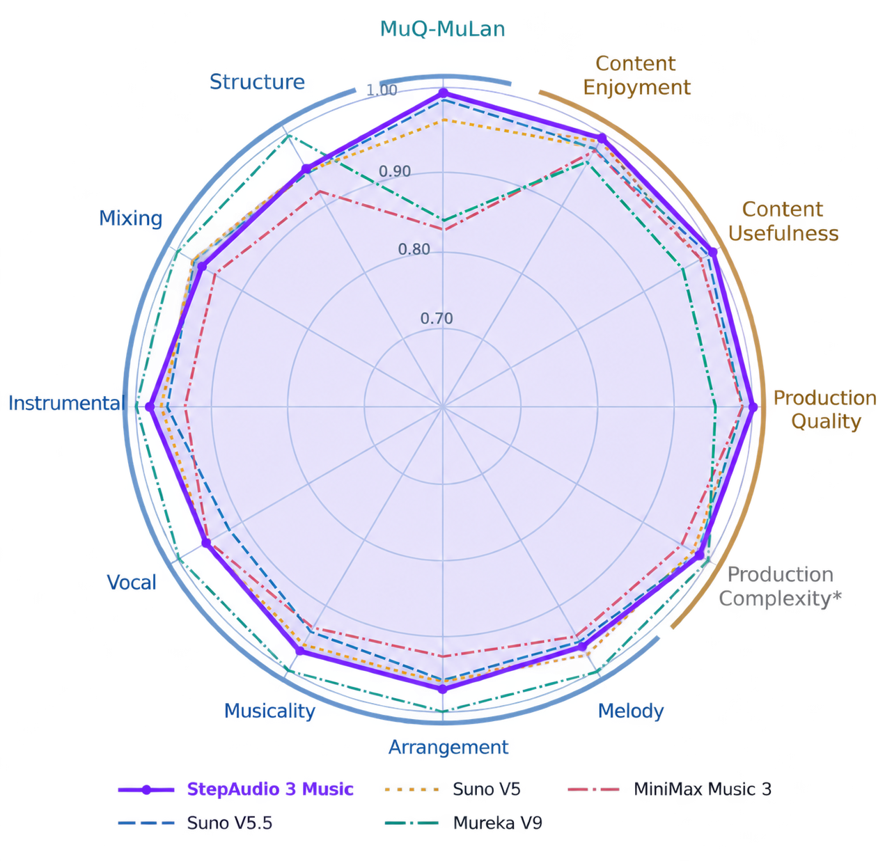

StepAudio 3 Music
MAKE YOUR IDEAS SING
[Intro]
先把歌想清楚，再唱出来。
StepAudio 3 Music 采用 MoE 架构与 AR + DiT 生成范式，将音乐结构规划与音频生成相结合。模型借助 ABC-COT，在生成前规划歌曲结构、段落衔接与编曲层次，为完整歌曲的生成提供结构化指导。ABC-COT 将自然语言中的创作意图转化为音乐规划，使风格、人声、情绪、乐器、调性与速度等控制条件贯穿生成过程。通过结构化规划与音频生成的协同，模型能够更准确地遵循描述，在歌曲结构、演唱表现与配器细节上实现更强的可控性。
你的描述
风格、人声、音色、情绪、乐器、调性、速度，用自然语言写就行。
caption + lyrics结构与编曲规划
先定段落走向和配器分工，再进入生成。
ABC-COT演唱与成曲
按规划生成人声与伴奏，段落之间自然衔接。
AR + DiT完整歌曲
一首可直接试听、下载的成品，不是片段。
48kHz · stereo
[Verse]
四种功能，覆盖音乐创作多环节
[Chorus]
兼具音乐质量与可控性


StepAudio 3 Music 在衡量音乐质量的 Audiobox 和衡量可控性的 MuQ-Similarity 评测中均取得 SOTA 结果，展现出高质量音乐生成与精准遵循创作意图的能力。在评价生成歌曲审美质量的 SongBench 指标上，模型同样取得具有竞争力的结果，在音乐质量、可控性与歌曲审美之间呈现出均衡的综合表现。
[Bridge]
谁在用它。
短视频与自媒体
按内容的情绪和节奏直接出背景音乐、片头与主题曲，不用再翻曲库谈授权。
词曲与 Demo
编曲方向先听到再决定往哪改，把灵感变成能试听的样片。
游戏与互动内容
围绕角色设定和剧情生成主题曲与氛围音乐，声音也能有辨识度。
© StepFun · StepAudio3-Music